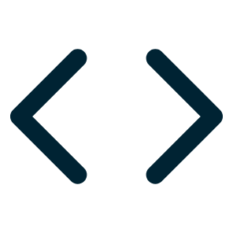
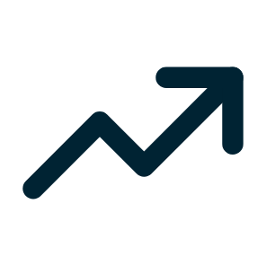
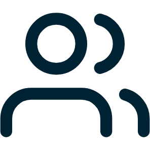

Ontwerpt het en bouwt het zelf

Eigen app, live
In Figma ontworpen met een eigen design system, gebouwd met een echte login. Draait nu op de telefoon.

Website in Framer
Voor een detailingstudio, ontworpen en gebouwd. Volgens de kandidaat 30 tot 40% meer omzet.

Scouting
Organiseerde evenementen tot 30.000 bezoekers. Deed ook sponsoring, video en social.
Omzetcijfer: eigen opgave van de kandidaat, niet gecontroleerd.
2